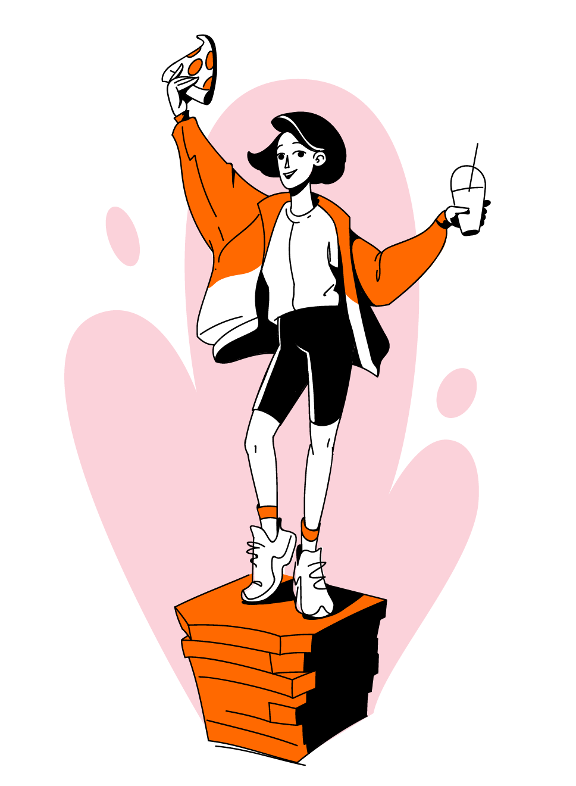
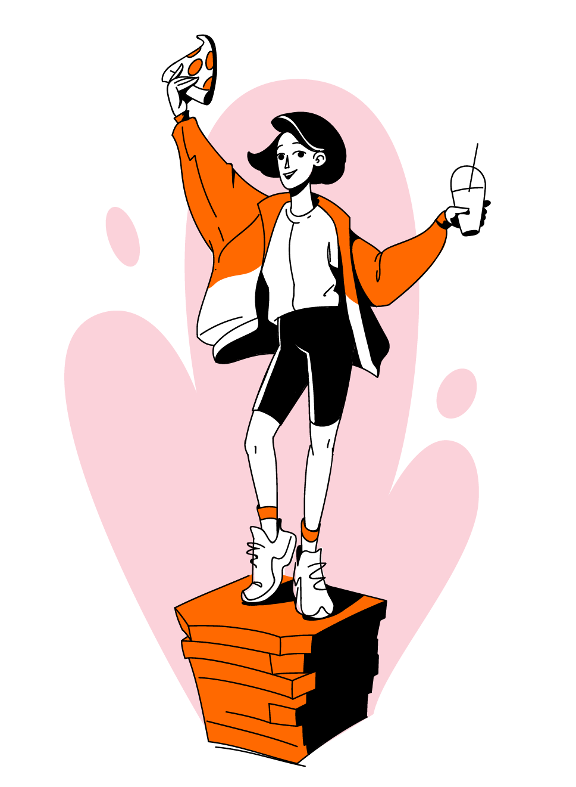

6
Ревью иллюстрации для страницы «Тайный покупатель». Поиск стиля.
Иллюстрация устарела и отстала от стиля. В этой версии ещё не было лиц, поэтому она хуже передаёт эмоции. Одежда топорная, пицца пластиковая, всей картинке не хватает детализации.

Обновляем картинку в соответсвии со стилем из брендбука.
Добавляем лицо, исправляем фасоны одежды и причёску, перерисовываем пиццу, правим блики, добавляем детали.
В качестве эксперимента пробуем нарисовать этот сюжет в совершенно других стилях.
Начинаем с создания скетчей. Тестируем различные пропорции фигуры и лица, одежду, разные уровни детализации персонажа и объектов вокруг.
Сохраняем характер, стараемся максимально передать эмоции пластикой тела и выражением лица.

Выбираем один из скетчей.
Отрисовываем новую версию в другой стилистике.
Эта версия белее живая. Лайн свободный, одежда расслабленная, причёска гривая, лицо более выразтельное за счёт усиленной стилизации.
Эксперементы с палитрой в слайдере.

 

Продолжаем эксперимент. Используем другой скетч.
Данная версия более стилизованная. Пропорции сильно искажены, крупная голова акцентирует внимание на эмоции, лицо «диснеевское». Предметы упрощённые.
Цветовое решение немного экстремальное, используем голубой цвет кожи.
Отрисовываем третий скетч.
Стилизия пропорций и форм в этой версии максимально далека от реализма. Предметы упрощённые. Графические приёмы усложненные: градиенты, текстуры, тени.
Цвета классические с добавлением оттенков.

Четвертый вариант.
Формы скруглённые. Цвета аппетитные: оранжевая кожа додо-цвета и пастельное окружение. От использования контуров отказываемся, добавляем объема тенями.

В пятом примере уходим в азиатскую стилизацию.
Пропорции человека мультяшные, голова крупная, лицо «детское» приветливое, глаза большие. Цвета лёгкие и сочные.
Пробуем вариант с полупрозрачными цветными контурами и заливками.